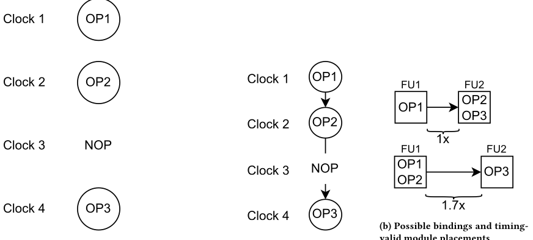
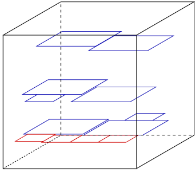
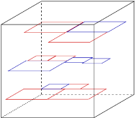
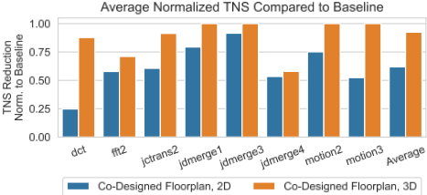
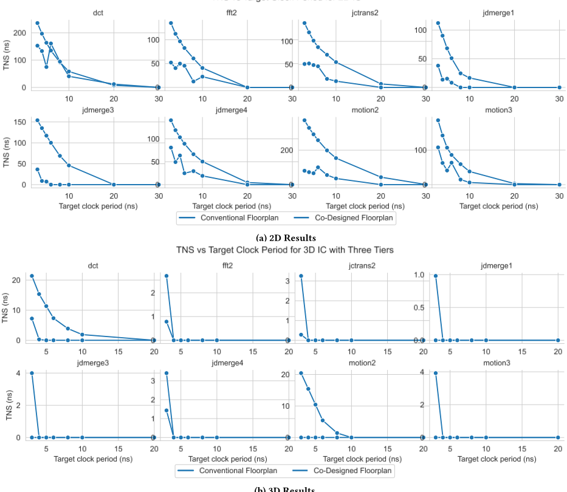

一种面向 3D IC 协同设计的高层次方法
论文针对 3D IC 中 HLS 架构综合与物理设计割裂、导致时序违例（TNS）难以收敛的问题，提出将 operation binding 与 3D 模块级 macro placement 纳入同一迭代闭环的协同设计流程。方法上以 MILP（Gurobi 求解）做时序感知 binding，目标函数可选 TNS/WNS/违例路径数，并由 scheduled DFG 导出的模块间时序预算推算每条 net 的目标线长；再将指数型 timing-weighted wirelength 代价函数嵌入 ePlace-3D 的力导向全局布局（WA 线长近似下梯度闭式可解）与 simulated annealing 合法化步骤，环内无需调用 STA，TSV 按 RC 延迟对 Z 维加权并建模为零体积。在 MediaBench 提取的 DFG 上，相比传统流程 2D/3D 平均 TNS 分别降低 62% 与 92%，部分案例达到 0 TNS。对团队而言，时序预算驱动布局加权与 binding-布局迭代闭环的思路对 HBM4/UCIe 等多 die 集成场景有方法学参考价值，但其 HLS datapath 流程与团队以手写 RTL 为主的 IP 开发栈不直接匹配。
传统流程先完成 HLS 架构综合、再进行物理设计，operation binding 决定了模块间数据传输可用的时序预算，却不感知模块间物理距离与 TSV 延迟；在 3D IC 中这种割裂使互连延迟更难满足 schedule 约束，导致 TNS 违例。论文要解决如何将 binding 与 3D 模块布局协同优化以改善时序收敛。
提出 binding-placement 迭代闭环：（1）将时序感知 binding 建模为 MILP，用 schedule 导出的操作对间最大允许延迟 P(x,y) 与模块对物理延迟 D(i,j) 比较，目标函数可选 TNS、WNS 或违例路径数（论文指出 1-norm 松弛等价于 TNS，故直接用 TNS）；（2）依据时序预算为每条 net 生成目标线长 target_e，提出指数型 timing-weighted wirelength 代价函数，在 WA 线长近似下梯度闭式可解，同时嵌入 ePlace-3D 的力导向全局布局与低温 simulated annealing 合法化步骤，避免环内 STA；TSV 的 Z 维按单个 TSV 的 RC 延迟加权、体积建模为零；（3）迭代执行 binding→目标线长生成→3D 布局，TNS 为 0 则返回，否则继续至迭代上限（10 次）。工具链含 SUIF 提取 DFG、path-based scheduler、Gurobi、Cadence Genus/Innovus（Nangate45）、OpenSTA、OpenROAD、RosettaStone 与 ePlace-3D。
相比传统 binding 与布局流程，平均估计 TNS 在 2D floorplan 上降低 62%
相比传统流程，平均估计 TNS 在 3D floorplan 上降低 92%
除一个案例外，所有时钟周期目标下 co-design 流程均达到或优于传统流程的 TNS，且部分案例达到 0 TNS（传统流程无法达到）
唯一劣于 baseline 的案例为 2D dct 在 6ns 时钟周期，归因于迭代上限 10；将上限提高到 20 后 TNS 为 133ns，略优于 baseline 的 135ns
据作者所述，此前没有工作将 HLS 与 3D IC 结合并以时序为目标：已有 3D 工作聚焦在架构综合完成之后的物理设计，已有 HLS-物理协同工作面向功耗或布线拥塞。本文首次将 operation binding 与 3D 模块布局放入同一优化闭环直接优化 TNS，并提出无需 STA、可直接嵌入 ePlace 类布局器代价函数的可微指数时序加权线长方法。
相关度级别：medium
命中能力域：2.1 IP 架构与微架构 | 2.3 时序与物理实现
理由：论文主题落在 2.3（以 TNS 为目标的时序收敛与物理布局优化，使用 OpenSTA/Innovus 等）并涉及 2.1 中的多 die/3D 集成架构（TSV 堆叠、跨 die 时序预算），与团队 HBM4（3D 堆叠存储）、UCIe（chiplet 互连）产品线的演进方向相关。但论文核心手段是 HLS datapath 的 MILP binding 与模块级 3D macro 布局，团队 IP 开发以手写 RTL、控制密集型逻辑与商用 2D 实现流程为主，不采用 HLS datapath 流程，方法本身无法直接套用，故评为 medium，价值在于方法学借鉴与前瞻视野。
建议动作：作为方法参考存档
与传统的单片式二维集成电路（2D IC）相比，三维集成电路（3D IC）有望实现更高的逻辑密度和更低的布线拥塞。高层次综合（High Level Synthesis, HLS）工具通过从更高的抽象层次入手进行设计，有望降低设计复杂度，并提供更大的优化灵活性。我们提出将 HLS 与 3D IC 宏单元布局整合到同一个整体化流程中，通过架构与物理设计的协同设计来改善 3D IC 的时序收敛。平均而言，与传统的绑定与布局技术相比，我们的方法在 2D IC 和 3D IC 上分别能够将估计总负时序裕量（estimated total negative slack, TNS）降低 62% 和 92%。
3D IC、高层次综合（HLS）、协同设计、绑定、物理设计
Daniel Xing 和 Ankur Srivastava。2024。一种3D IC协同设计的高层次方法。载于第61届ACM/IEEE设计自动化会议（DAC '24），2024年6月23-27日，美国加利福尼亚州旧金山。ACM，美国纽约州纽约，共6页。https://doi.org/10.1145/3649329.3658268
三维电路集成通过在垂直方向上堆叠以传统方式制造的二维单片芯片，为集成电路（IC）的设计与封装引入了一个新的维度，芯片间的连接借助硅通孔（TSV）实现。3D IC 有望带来更高的密度、更短的线长以及更优的性能 [27]。然而，3D 芯片也带来了额外的设计复杂性，因为每个芯片仍需单独制造，并且需要考虑 TSV 布线开销。
许多其他工作专注于改进 3D IC 的寄存器传输级（RTL）到 GDS 流程。一种方法是“欺骗”传统的 2D 工具流程，使其生成有效的 3D 设计 [15, 23]。另一些工作则提出将 2D 设计方法扩展到 3D（即所谓的“真 3D”方法）[8, 12, 19]。然而，这些工作都将注意力集中在架构综合完成之后 3D IC 的物理设计上。
此前已有少数工作探索了将高层次综合（HLS）与物理设计相集成。[21] 探讨了一种基于强化学习的 HLS-布局规划方法学。[26] 提出了一种
允许免费将本作品的部分或全部内容制作成数字或硬拷贝用于个人或课堂用途，前提是这些拷贝不得以营利或获取商业利益为目的而制作或分发，且拷贝首页必须带有本声明及完整的引用信息。本作品中第三方组件的版权必须得到尊重。对于所有其他用途，请联系所有者/作者。
© 2024 版权归所有者/作者所有。
ACM ISBN 979-8-4007-0601-1/24/06
Daniel Xing dxing97@umd.edu 马里兰大学帕克分校，美国马里兰州科利奇帕克
Ankur Srivastava ankurs@umd.edu 马里兰大学帕克分校，美国马里兰州科利奇帕克
物理感知的高层次综合（HLS）方法学，用于降低布线拥塞，该方法可指出高层描述中的哪些部分正在造成布线拥塞，以便在环的工程师对其进行调整。[11] 提出了一套完整的物理感知HLS工具流程，利用分布式寄存器架构来优化绑定与调度。[6] 将HLS绑定与布局规划整合到同一循环中以实现功耗优化，其采用一种概率方法，根据由布局规划得到的线网长度来估算功耗。据我们所知，目前尚无工作探索以时序为目标将HLS与3D IC相集成。
我们提出的方法在3D设计中针对时序对数据通路进行优化。我们将操作绑定与3D模块级布局相集成，通过在绑定-布局循环的每次迭代中直接针对时序优化绑定，从而减少总负时序裕量（TNS）违例。我们将资源视为待放置到3D堆叠芯片设计上的固定外框（fixed-outline）2D模块，并将模块间互连信息作为约束整合到我们的绑定方法中。我们的贡献是
HLS is a process that takes a high level behavioral description of some functionality (typically given as C, SystemC, or MATLAB code) and transforms it to RTL. There are three main steps to HLS (not necessarily performed in this order): resource allocation, operation scheduling, and operation binding. The allocation step determines how many functional modules are available for operations to use. Operation scheduling takes a dataflow graph (DFG) derived from the high level description and constrains which clock cycle each operation takes place in while meeting constraints such as timing, data dependency, and resource allocation. The output from these two steps will be a scheduled DFG, a directed acyclic graph with nodes representing operations and edges representing data dependencies. The binding step takes these scheduled operations and maps them to functional modules from the allocation step. Common binding optimization schemes including optimizing for low power [3, 24] and low area [5].
2.2
Analytical Global Placement
The global placement step during physical design concerns itself
with the general placement of macros and standard cells, although in
this work we will focus on the placement of fixed-size macros. Given
a collection
hyperedges
𝑈
𝐸
be represented as a constrained optimization problem. The objective
is to find a placement of nodes
such that the total wirelength
minimized:
Where
𝜆
Multiple density functions have been proposed [4, 7, 13, 14, 18].

The current state of the art uses density functions based on the
electrostatic model used in the ePlace[18]/RePlAce[4] family of
placers, which models each placement object as a electrostatically
charged object. The density function
can then be thought of
as the total electric potential given a particular placement
, which
the optimizer seeks to minimize by finding its gradient.
The wirelength of each net is traditionally modeled by the half-
perimeter wirelength (HPWL) model at the global placement stage
[10]. However, since analytic global placers use gradient-based op-
timization and the HPWL is not differentiable everywhere, various
approximation methods have been proposed, including log-sum-
exp and weighted-average (WA). We use the WA model in our work
as it has been shown to yield lower estimation errors compared to
LSE [8].
Module Placement at the System Design Level
Our key insight is that module binding and module placement
can be tightly coupled together into a single optimization loop to
improve timing. Timing delays between operations derived from
the scheduled DFG can be used to inform binding about timing con-
straints between physically placed modules, and therefore search
for resource bindings that minimize timing violations. Timing infor-
mation can then be passed along to a force-directed macro placer,
which we utilize using our dynamic weighting approach. We will
基于特定资源布局寻找时序有效的绑定问题可以表示为混合整数线性规划（MILP）。为了便于理解我们的公式表述，表1列出了我们所使用的常数和变量。
前几个约束确保可行解空间中的任何绑定都是有效绑定。第一个约束将在任意时钟周期内可绑定到某个模块上的操作数量限制为至多一个：
此外，每个操作都必须绑定到一个模块：
在此基础上，我们可以计算 𝑐，它捕获了每一对操作绑定：
请注意，上述约束不是线性的，但由于 𝑏 是二进制值，因此可以将其改写为一组线性约束。
基于这些前提约束，我们可以开始引入物理时序信息。如果我们只想找到一个满足时序约束且无负裕量的绑定，可以使用以下约束：
该约束通过 𝑐 𝑥,𝑖,𝑦,𝑗 根据物理模块 𝑥 和 𝑦 所绑定的对象，找出模块 𝑖 和 𝑗 之间相关的物理延迟 𝐷 𝑖,𝑗，并确保其小于调度定义的延迟约束 𝑃 𝑥,𝑦。请注意，我们假设每个操作的数据依赖都发生在之前的时钟周期中。如果多个操作可以
of
我们的混合整数线性规划（MILP）模型会生成一个有效的数据通路架构，以及模块间连接处的时序约束。基于这些时序约束，我们可以为每条线网估算出能够合理满足时序约束的最长连线。对于每条线网 𝑒 ∈ 𝐸 ，我们都有一个目标线网长度 𝑡𝑎𝑟𝑔𝑒𝑡 𝑒 。总线长是判定全局布局质量最常用的指标。全局布局器最常用的线长度量 𝑊 ( x ) 即为半周长线长（HPWL）：
我们提出了一种灵活的动态加权方法，通过使用指数函数，在线长接近由时序推导出的线长目标时增大受时序约束线网的权重：
其中，𝛾 控制超出某一特定由时序推导的线长目标 𝑡𝑎𝑟𝑔𝑒𝑡 𝑒 时所受的惩罚。对于 3D IC，我们通过以单个硅通孔（TSV）的预期 RC 延迟对 Z 维度进行加权，来考虑 TSV 的延迟贡献。与 [17] 等以往的时序驱动布局方法相比，采用这种加权方法的优势在于：我们可以将时序预算直接纳入布局器的代价函数，而无需经过代价高昂的静态时序分析（STA）步骤。
由于我们处理的是线延迟而非路径延迟，因此可以在开始模块布局之前就确定 𝑡𝑎𝑟𝑔𝑒𝑡 𝑒 的取值；同时，我们的权重函数具有完全可微的特性，这意味着修改后的线长项足够灵活，能够应用于任何在代价函数中使用线长的布局器。接下来两节将展示我们如何将这一权重应用于 ePlace-3D 中与模块相关的两个主要 3D 组件：基于模拟退火的宏单元合法化步骤，以及力导向的 3D 全局布局步骤。
3.3.1 面向模拟退火的时序加权线长 ePlace 中低温模拟退火所使用的代价函数与解析式全局布局器的代价函数类似（不含重叠项）：
其中，𝐷 ( x ) 是基于静电学的密度函数，𝜇 𝐷 被静态设置为 HPWL ( x )/ 𝐷 ( x ) 。将我们基于时序的
线长权重只需修改 HPWL 项，为时序约束线网加入指数权重即可：
由于模拟退火步骤在每个移动步骤中都会直接计算 HPWL 以确定总改进量，因此无需进行其他修改，大大简化了实现。
3.3.2 面向力导向布局的时序加权线长
基于 ePlace 的全局布局器通过求取代价函数的梯度来确定每个布局对象的移动方向。由于 HPWL 并非处处可微，人们已提出多种近似方法，其中最具代表性的是加权平均 𝑊𝐴 ( x ) 近似 [8]。通过将 HPWL 替换为其 WA 近似，我们可以将权重项应用于代价函数 (1)：
由于我们的权重在应用于 WA 近似时处处连续，因此可以求得加权线长项 𝑊 ( x ) 梯度的闭式表达式：
这使得实现相对简单直接。此外，当 WA 接近 𝑡𝑎𝑟𝑔𝑒𝑡 𝑒 时梯度的平缓变化意味着线长不会像“橡皮筋”一样在 𝑡𝑎𝑟𝑔𝑒𝑡 𝑒 附近来回振荡。
算法 1 描述了我们完整的 3D IC 协同设计流程。我们首先将模块间延迟初始化为 0（第 1 行），以便混合整数线性规划（MILP）求解器能够判断，仅凭已知的模块传播延迟，目标时钟周期究竟是否可行。在循环中，我们首先调用绑定器（第 3 行），找到使总负时序裕量（TNS）最小的绑定方案。绑定完成后，我们根据与每个线网的时序预算具有相同 RC 延迟的导线长度，为 𝑡𝑎𝑟𝑔𝑒𝑡 𝑒 生成取值。我们将生成的数据通路和目标线长传递给 3D 力导向布局器（第 5 行）。如果此时布局器返回的布局结果 TNS 为 0，我们就可以返回该布局（第 6、7 行）。否则，循环继续进行，直到达到迭代次数上限（第 2 行）。
设计者需要提供一个已调度的数据流图（DFG）、一份资源分配方案，以及每个已分配资源的模块轮廓和延迟估计。输出将是一个经过时序优化的布局，以及版图规划中连接各模块的每条线网上的估计时序裕量值。由于我们的工作抽象层次高于标准单元，我们假设硅通孔（TSV）的物理宽度为零，不占用任何布局面积。该布局随后可以传递给更详细的物理设计工具。


To evaluate our binding and module placement co-design flow, we extract functions from the MediaBench benchmark suite [16] for use with HLS. The DFG of each benchmark was extracted with SUIF and scheduled with a path-based scheduler [22]. As the DFGs extracted from these benchmarks (and hence the required module allocation) were small, we increased their size by duplicating the base DFG and appending them together to create a larger benchmark to stress test our method. We used a security-aware binding algorithm as our baseline reference binding method [28]. We limited the number of iterations of our co-design flow to 10 to keep runtimes manageable.
We used ePlace-3D [19] as our true 3D placer, although we note that any placer that utilizes HPWL (including RePlAce [4]) in its cost function can be used. As ePlace-3D is designed for mixedsize 3D placement, we modify its placement flow to tailor it for module-level placement by skipping the 3D and 2D global standard cell placement steps. Data for the conventional method used our module-optimized ePlace-3D implementation with no wirelength targets set. We empirically found that a 𝛾 value of 20000 yielded the best results for our benchmarks without causing numerical issues. As we are performing high level module placement and not a more detailed global placement step, we set the pin locations of all module-module nets to be at the center of each module's macro, and the macro's length/width is added to HPWL targets accordingly. In a similar vein, we model TSVs as having zero volume.
Gurobi was used to implement the MILP binding optimization program with a timeout limit of 20 minutes. Cadence Genus and Innovus were used to generate module macro blocks from RTL synthesized with Nangate45 [25] with an aspect ratio of 1. OpenSTA [1] was used to characterize each functional module's timing delay. OpenROAD [2] was used to initialize the die outline with a placement density of 70%, and RosettaStone [9] was used to translate LEF/DEF files from OpenROAD to the academic Bookshelf format used by ePlace-3D.
Figure 3 compares how our co-design technique compares against a conventional datapath synthesis and placement flow over all clock period targets tested. Data are for 3D floorplans are normalized against the TNS obtained from the conventional approach in 3D, and similarly for 2D. Our co-design flow was able to significantly reduce TNS in all cases, especially in 3D floorplanned test cases, while TNS reduction in the 2D case was less. This is due to the lesser degree of placement freedom in 2D, causing higher congestion and longer wirelengths which has been well documented in previous works [20].

Figures 4a and 4b show how TNS changes with tighter clock period constraints for 2D and 3D respectively. In all cases except one, our method was able to meet or beat the TNS of a conventional flow. Moreover, our co-design flow was able to reach 0 TNS in some cases where the conventional approach could not. The only case where the co-design flow did worse than the baseline was the dct benchmark at a clock period of 6ns for a 2D design, which upon further investigation was due to the iteration limit of 10 we used. By increasing the iteration limit to 20 we were able to find a module placement that yielded a TNS of 133ns, marginally better than the baseline TNS of 135ns. The small difference in TNS between the conventional binding and placement and our method for the other target clock periods in 2D dct tests also indicates that the conventional method was already close to timing optimal.
在本工作中，我们提出了一种面向 3D IC 的高层次综合（HLS）与物理布局协同设计流程。我们的方法通过提出一种物理感知的时序优化绑定方法，并结合时序感知的模块布局，显著改善了总负时序裕量（TNS）。我们将该协同设计流程应用于从 MediaBench 提取的数据流图（DFG），并对传统流程（其中 HLS 与布局分别独立进行）与我们的流程（将物理布局与 HLS 相集成）的 TNS 值进行了比较。总体而言，与传统方法相比，我们的流程在 2D 和 3D 布图规划下平均分别将 TNS 降低了 62% 和 92%。
(b) 3D 结果
